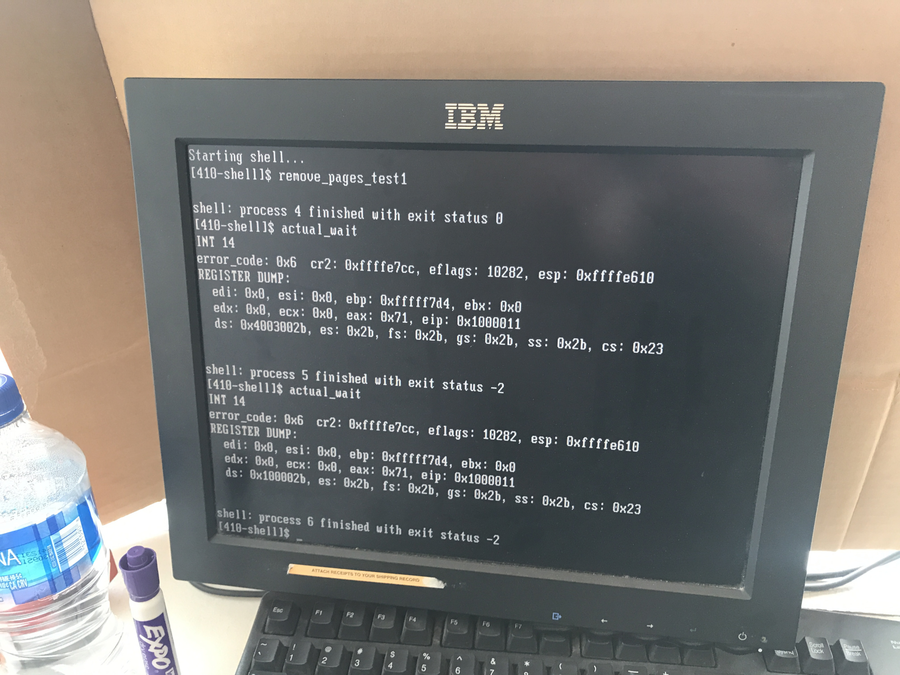

Project Description
COSMOS is an IA32 operating system. This operating system has some notable missing features including a full elf-loader and a file system. The testing was done via Simics, a full-system simulator used to run unchanged production binaries of the target hardware at high-performance speeds (Wikipedia). It can also be tested by loading the OS onto a floppy disk and putting it into an old IBM computer with a pentium ii processor.

At least it wasn't a triple fault!
-
The core systems in the kernel can be divided into the following categories:
- Virtual Memory system
– Physical frame manager
– Page directory interface
– Elf loader
– ZFOD support
– New pages/ remove pages system calls
- PCB/TCB system
– Process control blocks / thread control blocks
– Tcblist – a managed queue of threads (per process)
– Process/thread exit and reaping system
– Sleep system to reschedule threads for certain time amounts
- Scheduling/ Context Swapping system
– Context switcher
– Scheduler (Round Robin)
- Thread Lifecycle Syscalls
– Vanish and wait (wait for a child process to exit, or kill a thread/process)
– Set status (set exit status upon a vanish())
– Fork and thread fork
– Exec (reload a different executable into your virtual address space) - Console IO and Keyboard Drivers
- Exception Handlers
– x86 exceptions (we either abort kernel or kill thread)
– Pagefault handler
– Swexn ( can install a software exception handler ) - Locking
– Reader/writer locks
– Mutex variants
– Semaphore variants
– Conditional variables - Hypervisor extensions
– Hypercalls
– Shadow page tables
– Virtual interrups/exceptions
- Userspace libraries
– 1:1 threading library
-
Using the GRUB boot loader, my co-conspirator and I started with bootstrapping done and the processor entering an empty kernel_main().
The rest was up to us.
- Writing a virtual memory library (for allocating and manipulating page directory/table structures). We direct mapped the bottom 16 MB of a process’s virtual address space to the bottom 16 MB of physical memory that contained our kernel.
- Writing a physical memory manager that allocated and freed physical memory in 4Kb frames. We used this to satisfy process paging needs, and for initial loading of an executable into the process’s virtual memory space.
- Writing an elf-loader (due to time constraints, we were provided a utility that, provided all user executables, built a single file containing one large character array per executable. We still had to check an ‘elf-like’ header and load in the text, data, rodata, and bss sections).
- Installing “dummy” system calls and exception handlers into the IDT as interrupt/trap gates.
- Creating initial PCB/TCB control blocks to store threads and process information.
- Initializing keyboard and console drivers.
- Setting up stacks and control registers to support the initial leap to user space, initializing both an idle process and an init process that immediately forked a shell program.
Kernel init consisted of:
-
We then implemented the following system calls:
- deschedule – block until some event
- exec – execute a new program
- fork – create a copy of your process
- get_ticks – get system time
- gettid – get your thread id
- halt – halt the processor or simics
- make_runnable – make another thread runnable
- new_pages – request more memory pages for a process’s address space
- readfile – read from a file
- remove_pages – remove pages from a process’s address space
- set_status – set return status for a process
- sleep – sleep for a certain number of ticks ( thread will not be scheduled )
- swexn – install a user-defined software exception handler
- thread_fork – create a new thread
- vanish – exit a thread and possibly a process
- wait – reap exit status of a fork-ed child
- yield – deschedule current thread in favor of another
- readline – get a line from console input
- print – output buffer to console
- set_term_color – set the terminal color
- set_cursor_pos – set terminal cursor position
- get_cursor_pos – get terminal cursor position